网络安全复习
第8章 网络安全（小于10分）¶
8.4 密码学+¶
-
Kerckhoff 原则：所有的算法必须是公开的而密钥是保密的；
-
置换密码：凯撒密码，简单的字母替换；
-
替代密码：重新排序，不伪装明文，例如列换位密码，书写秘钥后，下方对齐秘钥逐行书写明文，最后根据秘钥中字母顺序重新排序各列；
-
一次性秘钥：生成随机位串与明文异或，是理论上绝对安全的，量子密码（如 BB84）可以实现一次性秘钥传输；
- 两个原则：①消息必须包含一定的冗余度 Messages must contain some redundancy；②需要采取某种方法来对抗重放攻击 Some method is needed to foil replay attacks，即要保证每条接收的消息都是 fresh 的，要对抗重放攻击。
8.5 对称密钥算法++¶
我们主要研究块密码，它接受一个 n 位的明文块作为输入，并利用密钥将它变换成 n 位的密文块。因此明文在进入加密算法前先需要进行填充和分组。
乘积密码
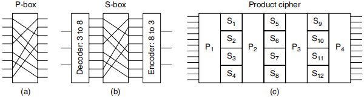
- 图（a）表示 P 盒，其作用为对输入重新排序（transposed 或 permuted），例如 01234567 重排为 36071245，注意 P 盒对 bit 进行操作；
- 图（b）表示 S 盒，其作用为置换（substitution），第一步译码将 3 bits 数转化为 8 种独热编码（one-hot，即只有一个为 1 其余均为 0 的编码）之一，例如 5 对应 00001000（第五位置 1，其余为 0），然后经过 P 盒将 1 换到其他位置最后编码回 3 bits 数，S 盒基于此实现了对更多位的置换；
- 图（c）结合了 P 盒与 S 盒，二者共同构成乘积密码（product cipher）。该图展示了通过多个小 S 盒近似达到一个大 S 盒的效果。若 S 盒能置换 n bits，则需要 \(2^n\) 根线（注意独热编码），实现 \(2^n\) 项的查询表（给所有 n bits 的二进制串各分配一项）；
- 对 k 位输入执行一个乘积密码算法以产生一个 k 位输出，这非常常见。典型情况下，k 介于 64～256。在许多文献中，这样的迭代称为轮（round）。
数据加密标准（DES，Data Encryption Standard）
DES 的基本结构如图所示，我们可以知道：
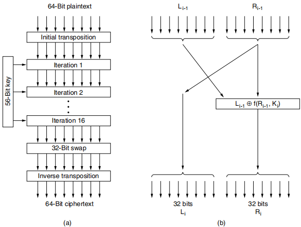
- 明文按 64 位数据块被加密，生成 64 位密文。DES 算法以一个 56 位密钥作为参数，它共有 19 个步骤；
- 第一步是一个与密钥无关的替代操作，它直接作用在 64 位明文上。最后一步是这个替代操作的逆操作。倒数第二步是交换左 32 位和右 32 位。剩下的 16 步在功能上完全相同，但使用了原始密钥的不同函数作为参数；
- 中间步骤如图（b）所示，每个步骤接受 2 个 32 位输入，并产生两个 32 位输出。左边的输出是右边输入的一份副本，右边的输出是左边输入与一个函数值逐位异或的结果；
- 该函数的输入参数有两个，分别是右边的输入和当前步骤所用的密钥 \(K_i\)。所有的复杂性都体现在这个函数中；
- 此函数包含 4 个顺序执行的步骤。①根据一个固定的替代和复制规则，将 32 位 \(R_{i-1}\) 扩展成一个 48 位的数字 \(E\)。② \(E\) 和 \(K_i\) 异或，异或的结果分成 8 个 6 位组，每个 6 位组输入到不同 S 盒中。每个 S 盒有 64 种可能的输入，每种输入被映射到一个 4 位输出上；③最后，将这 8 \(\times\) 4 位通过一个 P 盒；
- 每次迭代使用不同密钥。算法开始之前，先在 56 位的密钥上执行一个 56 位替代操作。在每一次迭代之前，密钥被分成两个 28 位，每个 28 位向左循环移位，移动的位数取决于当前的迭代次数。移位以后再执行另一个 56 位替代即可导出 \(K_i\)，每一轮从这 56 位中提取出不同的 48 位子集并对它进行排列；
- DES 算法解密的步骤只是加密步骤的相反顺序；
- 白化（whitening）可以增强 DES：每一个明文数据块送给 DES 前先用一个随机 64 位密钥对它执行异或操作，然后在传输之前对 DES 输出的结果密文用第二个 64 位密钥执行异或操作。去掉白化逆向操作即可（前提是接收方拥有这两个白化密钥）。这项技术有效增加了密钥长度，使得用穷举法来搜索密钥空间需要消耗更多的时间。请注意，每个明文数据块使用同样的白化密钥（即这里总共只有一个白化密钥）。
三重 DES（Triple DES）
Diffie 和 Helman（1977）利用穷举密钥设计了一台能破解 DES 的机器。IBM 公司意识到 DES 的密钥长度太短，于是利用三重加密来有效地增加密钥长度（Tuchman，1979）。所选择的方法如图所示：
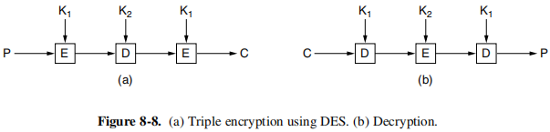
这种方法使用 2 个密钥，共包含了 3 个步骤。第 1 步按照常规的方式用密钥 \(K_1\) 执行 DES 加密；在第 2 步中，DES 以解密方式运行，并使用 \(K_2\) 作为密钥。最后，再次用 \(K_1\) 执行 DES 加密；
高级加密标准（AES，Advanced Encryption Standard）
DES 被认为有后门且被破解，因此 NIST 采取竞赛方式收集算法，Rijndael 算法赢得了比赛。Rijndael 支持密钥长度和块的长度可以从 128 位一直到 256 位（以 32 位为间隔逐步向上递增），密钥长度和块长度可以独立选择。然而 AES 规定块长度必须是 128 位，密钥长度必须是 128、192 或者 256 位。事实上 AES 提供两个变种：①数据块为 128 位，密钥为 128 位；②数据块为 128 位，密钥为 256 位。
Rijndael 对于 128 位密钥和 128 位块长度的情形，轮数为 10；对于更长的密钥或者更长的数据块，轮数可以增加到 14。我们考虑 128 位密钥和 128 位块长度的情形。
- 函数 rijndael 有 3 个参数。它们分别是① plaintext（明文），一个包含输入数据的 16 字节数组；② ciphertext（密文），一个包含加密之后返回的输出结果的 16 字节的数组；③ key（密钥），是 16 字节长的密钥；
- 在计算过程中，数据的当前状态被保存在一个字节数组 state 中，该数组的长度为 NROWS \(\times\) NCOLS。对于 128 位数据块，该数组为 4 \(\times\) 4 字节。利用这 16 字节可以存储整个 128 位数据块。state 数组初始化为明文，每一步计算都要修改，最后 state 中内容作为密文返回；
- 首先将密钥扩展到 11 个与 state 同样长度的数组中。它们被保存在一个结构数组 rk 中，其中每个结构元素包含一个状态数组。 11 个数组中有一个用在计算过程开始，其他 10 个用在 10 轮计算中，每轮一个数组。简单来说轮密钥是通过反复地对密钥中不同的位组进行循环移位和异或操作而生成的；
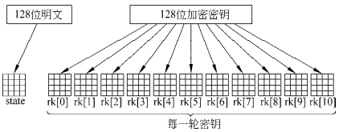
- 接下来将明文复制到 state 中，复制过程按列的顺序进行，前 4 个字节复制到第 0 列中，接下来 4 个字节复制到第 1 列中，以此类推。除此之外，主要计算过程开始之前 rk[0] 需逐字节异或到 state 中；
- 主循环共 10 次迭代，每轮 4 个步骤：①逐字节的置换 state。每个字节按顺序作为索引查找 S 盒来替换该字节的值（相当于直接的单字母表置换密码）。注意DES 有多个 S 盒，但 Rijndael 只有一个；② 4 行中的每一行向左循环移动。第 0 行移动 0 字节（即不改变）；第 1 行左移 1 个字节；第 2 行左移 2 个字节；第 3 行左移 3 个字节；③列混合，列与列之间不相干。混合操作通过矩阵乘法完成，新的列是老的列与一个常量矩阵的乘积，这里的乘法是有限 Galois 域上的乘法，即 GF(\(2^8\))，可以用两个查表操作和三个 XOR 操作来计算；④最后将这一轮的密钥异或到 state 数组中以便下一轮使用；
- 由于每一步都是可逆的，所以解密过程也很简单，只要反过来运行这个算法的每一步即可。然而，通过使用技巧，也可以用该加密算法来完成解密，只是用到的数据表不相同。
密码模式
尽管 AES 算法（或者 DES，或者其他任何块密码算法）很复杂，但本质上只是一种单字母置换密码算法，不过使用了极大的字符（对于 AES 为 128 位字符，对于 DES 为 64 位字符），因为用同样的 DES 密钥加密明文 abcdefgh 100 次会得到同样的密文 100 次。入侵者可以充分发掘这种特性来协助攻破整个密码系统。
-
电码本模式（ECB，Electronic Code Book mode）：例如使用 DES 加密一长段明文需将它分割成连续的 8 字节（64 位）数据块，然后用同样的密钥逐个加密这些数据块。如果有必要的话，将最后一段明文填补至 64 位；
-
密码块链模式（CBC，Cipher Block Chaining mode）：电码本模式存在缺陷，即可以将密文分割得到的数据块重新排序，使得解密的明文可能还是有效的，但已经被篡改。为了对抗这种类型的攻击，所有的块密码算法可以按各种不同的方式链接起来。例如使用密码块链模式，每个明文块加密前先与上一个密文块异或。因此，同样的明文块不再被映射到同样的密文块上，加密操作也不再是一个大的单字母置换密码了。第一个块与一个随机选取的初始矢量（IV，Initialization vector）异或，该初始向量（以明文方式）随着密文一起被传输，如图所示：
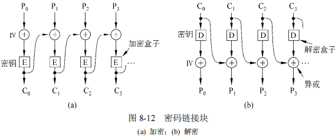
- 密码反馈模式（CFB，Cipher FeedBack mode）：密码块链模式也有一个缺点，即只有当整个 64 位数据块到达以后才可以开始解密。对于逐字节的加密应用，可以使用下图的密码反馈模式，它使用了（三重）DES。AES 基本思相同，只要使用 128 位移位寄存器即可。图中处于字节 0 至 9 已被加密并发送后的状态，当明文字节 10 到来时，DES 算法被作用在 64 位移位寄存器上，产生一个 64 位密文。该密文最左边的字节与 P\(_{10}\) 异或然后传送到输出线路上，并且移位寄存器左移 8 位，C2 从最左边移走，C10 被插入到 C9 右边空出来的位置中。密码反馈模式的一个问题是，如果密文在传输过程中只有一位意外发生翻转，解密过程中，当坏字节位于移位寄存器中时所波及的 8 个字节都将遭到破坏。坏字节移出移位寄存器后明文仍然正确。因此单位翻转错误只影响相对局部的区域，而不会破坏消息中其余剩下的部分，但是其影响的位数与移位寄存器的宽度相等。
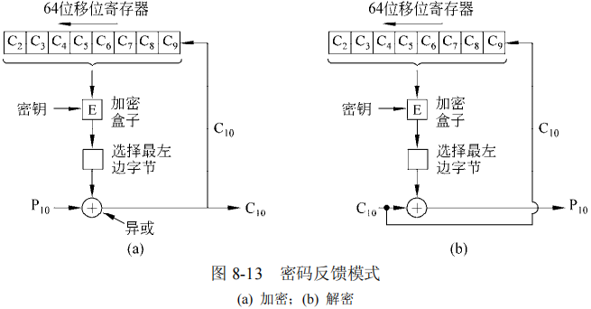
- 流密码模式（stream cipher mode）：CFB 1 位错误影响 64 位明文较为严重，可以选择第四种方案，即流密码模式（stream cipher mode）。它用一个密钥来加密一个初始向量以便生成一个输出块；然后用同样的密钥对这个输出块进行加密以得到第二个输出块；再对这一块进行加密以生成第三块，依此类推而进行加密。输出块的序列（可以任意长）称为密钥流（keystream），它就像一次性密钥那样与明文做异或操作来生成密文。注意初始矢量 IV 仅仅被用在第一步中，此后输出数据块被加密。同时，密钥流与数据独立（数据在最后才与密钥流异或），所以可以将密钥流提前计算，而且它对于传输错误完全不敏感；与一次性秘钥相同，不要两次使用同样的（密钥，IV）对，因为这样使得每次都会生成同样的密钥流。两次使用同样的密钥流将导致密文受到密钥流重用攻击（keystream reuse attack），密码分析者只要将两个密文 XOR 在一起，就可以消除掉所有的密码保护，并获得明文的 XOR 结果；
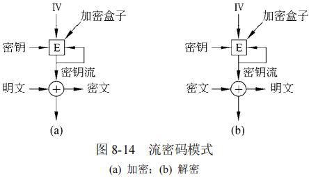
- 计数器模式（counter mode）：除电码本模式以外的模式想随机访问加密之后的数据是不可能的，然而磁盘文件通常访问随机块，这要求解密在它之前的所有数据块，这是非常昂贵的。因此发明了另一种模式，即计数器模式。明文并不直接被加密，被加密的是初始矢量加上一个常量的值，结果得到的密文再与明文做异或。通过“为每个新的数据块使初始向量递增 1”这种办法，在文件中任何地方的块都可以直接解密，而无需解密所有在它之前的数据块。它有一个弱点：假设同样的密钥 K 在将来又被使用了（明文不同，但 IV 相同），并且攻击者获得了这两次运行中所有的密文。这两种情形下的密钥流是相同的，从而使密码算法遭受密钥流重用攻击。
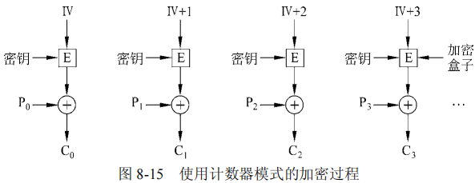
8.6 公钥算法++¶
Diffie 和 Hellman 提出了一种全新的密码系统，在这种密码系统中，加密密钥（公钥）和解密密钥（私钥）并不相同，而且不可能很轻易地从加密密钥推导出解密密钥。在他们的提案中，（受密钥控制的）加密算法 E 和解密算法 D 必须满足 3 个要求：
- D(E(P)) = P，即密码是可解密的；
- 从 E 推断出 D 极其困难，即很难从公钥推导出私钥；
- E 不可能被选择明文（chosen plaintext）攻击破解。
RSA
该方法的名字来源于 3 个发现者名字的首字母（Rivest、Shamir、Adleman），主要缺点是要想达到好的安全性，密钥至少需要 1024 位（相比之下，对称密钥算法只需 128 位），这也使得它的运算速度非常慢。其安全性建立在分解大数的难度基础之上，流程如下：
- 选择两个大的素数 p 和 q（保密，典型情况下为 1024 位）；
- 计算 n = p \(\times\) q（公开） 和 z = (p-1) \(\times\) (q-1)；
- 选择一个与 z 互素的数，将它称为 d（保密）。
- 找到 e（公开），使其满足 e \(\times\) d = 1 mod z。
计算出这些参数以后开始执行加密。首先将明文（可以看作一个位串）分成块，使得每个明文消息 P 落在 0 \(\le\) P < n 中（只要将明文划分成 \(k\) 位的块即可，这里 \(k\) 是满足 \(2^k\) < n 的最大整数）。
- 为了加密消息 P，只要计算 C = P\(^e\) (mod n) 即可;
- 为了解密 C，只要计算 P = C\(^d\) (mod n) 即可;
- 可以证明，对于指定范围内的所有 P，加密和解密函数互为反函数。
为了执行加密，你需要 e 和 n；为了执行解密，你需要 d 和 n。因此，公钥是由(e, n) 对组成的，而私钥是由 (d, n) 对组成的。
8.7 数字签名+¶
数字签名的要求：一方向另一方发送的签名消息必须满足以下条件：
- 接收方可以验证发送方所声称的身份；
- 发送方以后不能否认该消息的内容‘
- 接收方不可能自己编造这样的消息。
对称密钥签名
做法是设立一个人人都信任并且又熟知一切的中心权威机构，比如Big Brother（简称 BB）。每个用户选择一个秘密密钥，并且亲手将它送到 BB 的办公室。因此，只有 Alice 和 BB 才知道 Alice 的秘密密钥 \(K_A\)，如此等等。然后 Alice 使用自己的私钥，利用对称密钥加密数据就具有不可抵赖性了。
公开密钥签名
注意公私钥加密解密：
- A 给 B 发送加密消息：A 使用 B 的公钥加密，B 使用 B 的私钥解密；
- B 给 A 回信采用数字签名：B 先使用 Hash 函数（例如 SHA-1，SHA-2，MD5 等）生成摘要（digest），然后 B 使用 B 的私钥加密生成数字签名（signature），签名附在信件后；A 收到后用 B 的公钥解密，并生成摘要进行比对验证。
生日攻击
有人可能会认为，为了攻破一个 \(m\) 位的消息摘要，将需要 \(2^m\)数量级的操作次数。事实上Yuval（1979）在他的论文 How to Swindle Rabin 中发表了一种生日攻击方法，用这种方法通常只需要 \(2^{m/2}\) 量级的操作次数。
8.8 公钥管理¶
公钥密码体系获得他人的公钥不一定可靠，可能被其他人篡改，因此需要证书体系。
- CA（Certificate Authority，证书中心）发放证书（CA 可以有层次）
- CA 使用自己的私钥对对证书的 SHA-1 散列值进行签名
- 接收方使用 CA 的公钥进行签名验证
- X.509 为证书格式
8.9 认证协议++¶
认证（Authentication）是指这样的一项技术：一个进程通过认证过程来验证它的通信对方是否是它所期望的实体而不是假冒者。注意区分授权（authorization）和认证（authentication）这两个概念。
基于共享密钥的认证
我们假设 Alice 和 Bob 已经共享了一个密钥 \(\rm K_{AB}\)，这个协议以下面一个在许多其他的认证协议中都出现的原理为基础：一方给另一方发送一个随机数，后者将这个随机数做一个特殊的替代，再把结果返回给前者。这样的协议称为质询-回应（challenge-response）协议。
建立共享密钥：Diffie-Hellman 密钥交换
使用密钥分发中心的认证
使用 Kerberos 的身份认证
8.10 通信安全+¶
IP 安全（IPSec，IP security）
- 并不是所有的用户都想要加密功能（因为加密操作的计算代价较高），虽然 IPSec 并没有将加密功能做成可选项，它总是要求加密功能，但它允许使用空算法（null algorithm）。空算法因其简单、易于实现和极高的速度而获得了高度赞赏；
- 尽管它落在 IP 层，但它却是面向连接的。IPSec 环境中，一个“连接”称为一个安全关联（SA，security association）；
- 技术上，IPSec 有两个主要部分：①描述了两个新的头，这两个新的头可以被加入到数据包中以便携带安全标识符、完整性控制数据和其他的信息；② Internet 安全关联及密钥管理协议（ISAKMP，Internet Security Association and Key Management Protocol），处理建立密钥。ISAKMP 是个框架，用来开展工作的主要协议是 Internet 密钥交换（IKE，Internet Key Exchange）；
- IPSec 有两种使用模式：①传输模式（transport mode）中，IPSec 头被直接插在 IP 头的后面。IP 头中的 Protocol 字段要做相应的修改。IPSec 头包含了安全信息，主要是 SA 标识符、一个新的序号，可能还包括有效载荷数据的完整性检查信息；②隧道模式（tunnel mode）中，整个 IP 数据包，连同头和所有的数据一起被封装到一个新的 IP 数据包的数据部分，并且这个 IP 数据包有一个全新的 IP 头。当隧道的终点并不是最终的目标节点时，隧道模式将非常有用；
- IPsec有以下两种头，一个是认证头（AH，Authentication Header），另一个是封装的安全有效载荷（ESP，Encapsulating Security Payload），如图所示：
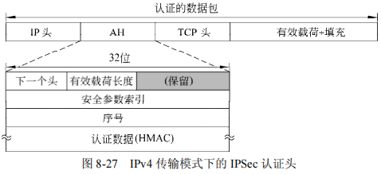
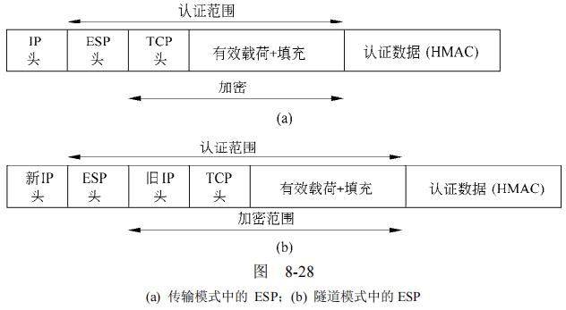
防火墙（firewall）
防火墙的作用就像一个包过滤器（packet filter）。它检查进出的每个数据包。通常只有那些符合网络管理员所定规则和条件的数据包才被放行，而那些不符合条件的数据包则被丢弃。
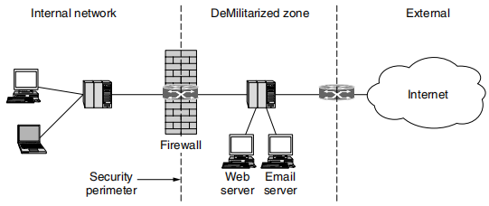
虚拟专用网络（VPN，Virtual Private Networks）
一个常见设计是在每个办事处都设置一个防火墙然后在所有办事处之间创建一条通过 Internet 的隧道。系统启动时，每一对防火墙必须协商它们的 SA 参数，包括服务、模式、算法和密钥。如果隧道采用了 IPSec，那么很可能要聚合两个办事处间所有流量组成一个经过认证的加密 SA。防火墙、VNP 和具有 ESP 的 IPSec（隧道模式）是很自然的一种组合，在实践中得到了广泛应用。
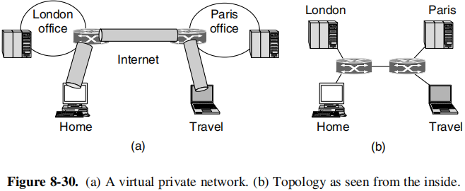
无线安全性
802.11安全
部分 802.11 标准，最初称为 802.11i 规定了一个无线数据链路层安全协议，用来防止一个无线节点阅读或干扰另一对无线节点之间发送的消息。商标名称为 WiFi 保护接入 2（WPA2，WiFi Protected Access 2）。802.11i 是有线等效保（WEP，Wired Equivalent Privacy）的替代品，这是第一代 802.11 安全协议。
8.11 电子邮件安全+（PGP）¶
PGP（Pretty Good Privacy）-良好的隐私性
- 使用块密码算法 IDEA 国际数据加密算法加密数据，IDEA 类似于 DES / AES，允许多轮，但混合函数不一样。
- 密钥管理使用 RSA，数据完整性使用 MD5。
基本流程图如下：
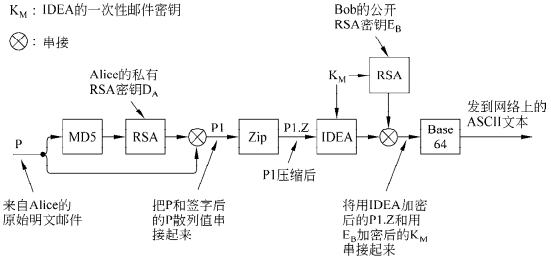
Alice 调用她自己机器上的 PGP 程序：
- 使用 MD5 算法对消息 P 做散列运算，然后用 Alice 的 RSA 私钥 \(D_A\)加密此结果散列值；
- 经过加密的散列值和原始消息 P 被串接成单条消息 P1，并且使用 ZIP 程序压缩（Ziv-Lempel 算法），压缩结果称为 P1.Z；
- 接下来，PGP 提示 Alice 输入一些随机信息。输入的容和敲键速度被用来生成一个 128 位的 IDEA 邮件密钥 KM，按照密码反馈模式，利用 IDEA 算法和 KM 来加密 P1.Z。另外，使用 Bob 的公钥 \(E_B\)来加密 KM；
- 然后两部分内容被串接，并转换成 base64 编码。结果邮件只包含字母、数字和符号 +、/ 和 =，这意味着该邮件可以被放到一个 RFC 822 邮件体中，有望未被修改地到达另一方。
当 Bob 得到此邮件时，他做一个逆向的 base64 编码，并且利用他自己的 RSA 私钥解密出 IDEA 密钥。利用这个密钥，他解密此邮件得到 P1.Z；再经过解压缩，Bob 将明文与加密的散列值分离开，并且使用 Alice 的公钥解密此散列值。如果得到的明文散列值与他自己计算的 MD5 散列值一致，那么，他知道 P 是正确的邮件，而且它确实来自于 Alice。
PGP 支持 4 种 RSA 密钥长度。它可以由用户选择一种最为合适的长度。这些长度选 项是： （1）临时的（384 位）：今天很容易被破解；（2）商用的（512 位）：可被三字母组织破解；（3）军用的（1024 位）：地球上的任何人都无法破解；（4）星际的（2048 位）：其他行星上的任何人也无法破解。
由于 RSA 仅仅被用在两个小的计算过程（加密 128 位的 MD5 散列值和加密 128 位 IDEA 密钥）中，所以，每个人在任何时候都应该使用星际强度的密钥。
经典 PGP 消息的格式如图所示，可以对照流程进行理解：
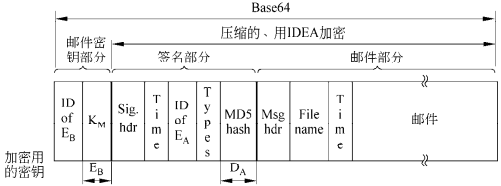
PGP 的密钥管理模型：
每个用户在本地维护两个数据结构：一个私钥环和一个公钥环。
-
私钥环（private key ring）包含一个或者多个本人的“公钥/私钥”对。每一对“公钥/私钥”都有一个标识符与其关联，该标识符由公钥的低 64 位构成，所以邮件发送方可以告诉接收者自己是使用哪一个公钥来对它加密的。
-
公钥环（public key ring）包含了与当前用户通信的其他用户的公钥。公钥环上的每个条目不仅包含了公钥，而且也包含它的 64 位标识符，以及一个代表用户信任此密钥的强烈程度的指示值。
- 在 X.509 被标准化以后，PGP 除了支持传统的 PGP 公钥环机制以外，也支持X.509 证书。所有当前的 PGP 版本都支持 X.509。
S/MIME：略
8.12 Web安全+¶
安全命名
DNS 欺骗（DNS spoofing）：C 攻破 A 的 ISP 上的 DNS 缓存，将 B 的条目替换为自己的。做法是向 A 的 DNS 服务器请求 B 的条目（缓存中应没有 B 的条目，否则需要等待或运用其他高级手段），然后将预先准备好的伪造 UDP 答复先于真实的答复返回给 DNS 服务器即可产生错误的条目，得到染毒缓存（poisoned cache）。
DNS 安全（DNSsec，DNS Security）
实际上上述攻击并非这么简单，因为 DNS 回复需要检查需要，C 必须通过一定方法知道序号。实际上 C 是可以做到这一点的，因为 DNS 序号是递增的，因此j将这一序号随机处理就可以解决一定的问题。
当然 DNSsec 采取了更多的手段，它利用公钥技术①证明数据从哪里来；②分发公钥；③认证事务和请求。
SSL—安全套接层
SSL 在两个套接字之间建立一个安全的连接，其中包括以下功能：（1）客户与服务器之间的参数协商；（2）客户和服务器的双向认证；（3）保密的通信；（4）数据完整性保护。
SSL 安全层位于应用层和传输层之间，SSL 之上的 HTTP 称为 HTTPS，有时使用端口 443。
移动代码安全性
现在，Web 页面通常包含小程序，例如 Java Applet、ActiveX 控件和 JavaScript 等。下载并执行这样的移动代码（mobile code）很显然存在极大的安全风险。
Java小程序（Java Applet）
Java 小程序插入到浏览器内部 JVM 解释器中。在经过编译的代码上再来运行解释性代码的好处是，解释器在执行每一条指令之前可以先对指令进行检查。解释器可能要将不可信任的 Java 小程序（比如它通过 Internet 进入本地机器）封装到一个沙箱（sandbox）中以便限制它的行为，并捕捉住它使用系统资源的企图。
ActiveX
ActiveX 控件是可以被嵌入到 Web 页面中的 x86 二进制程序。当浏览器遇到一个 ActiveX 控件时，它就要对该控件进行基于代码签名（code signing）的检查。每个 ActiveX 控件都有一个利用公钥对代码散列值进行的数字签名。浏览器首先验证该控件的签名，签名正确则检查它的内部表，看该程序的创建者是否可信，或是否存在一条信任链可以回溯到某个可信的创建者。创建者可信则程序被执行；否则不予执行。Microsoft 用来验证 ActiveX 控件的系统称为认证码（Authenticode）。
对比 Jave 和 ActiveX。若采用 Java 方法，用户无法确定一个 Java 小程序是谁写的；但运行时解释器可以保证这个 Java 小程序不会做出该机器主人明确指明不允许做的事情。与此相反，若采用代码签名的方法，则浏览器不可能监视移动代码运行时的行为。
JavaScript
JavaScript 没有任何正式的安全模型，但是却有很长的安全泄漏历史。基本的问题是让外部代码在你的机器上运行，这等于在自找麻烦。
浏览器扩展（Browser Extensions）
是用来扩展 Web 浏览器的计算机程序，提供了解释或者显示一定类型内容的能力，例如 PDF 或者 Flash 动画。安装浏览器扩展、外接附件或插件将使代码穿过 Internet 被下载和安装在浏览器上，如果安装的代码有问题，整个浏览器都将受到损害。
病毒（Viruses）
病毒与普通移动代码之间的区别在于病毒具有繁殖能力，它通常首先会感染硬盘上的可执行程序。当被感染的程序运行起来时，控制权被传递给病毒，它通常试图将自己传播到其他的机器。